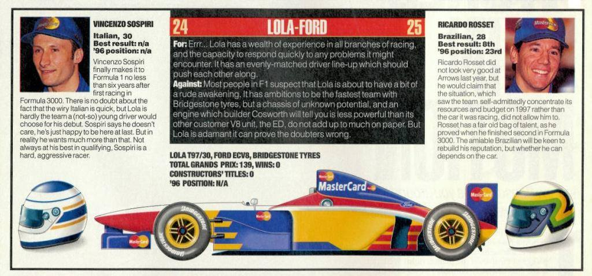

You might not associate Mastercard with motorsport (apart from the Goodwood Festival Of Speed where they are sponsors) but they did have a stint in Formula 1 back in 1997 when they partnered with Lola Cars for that years' F1 season. However due to some unfortunate circumstances, for example, the T97/30 chassis was untested in a wind tunnel as well as on-track testing due to Mastercard threatening to withdrawal their sponsorship due to their intent to launch their "F1 Club" for card holders to provide funding for Lola. As such, the originally planned 1998 unveiling was pushed 1 year in advance. The engine too was the same that was used by the Forti team (Ford ECA Zetec-R V8) that went bust the previous year, instead of the planned in-house Lola V10 due to the fact that there wasn't enough development time (because of the aforementioned pressures from Mastercard). This both resulted in the Lola being slower in qualifying at Melbourne by a good 11-13 seconds (by Vincenzo Sosperi and Ricardo Rosset respectively). Due to the implementation of the 107% rule, that means that they were not qualified to even be on the starting grid, as they were under (or rather over) the pole sitter, Jacques Villeneuve (1:29.369). The wednesday before the Brazilian Grand Prix, Lola announced it was withdrawing from the Brazil race due to "financial and technical problems". Lola's staff, who had already travelled to Interlagos, returned to the team's base. Shortly afterwards, Lola withdrew from the World Championship outright. All in all, it's up there with the likes of Subaru Coloni, Life, and Andrea Moda as one of the worst in F1.
Formula Cars
MasterCard Lola

